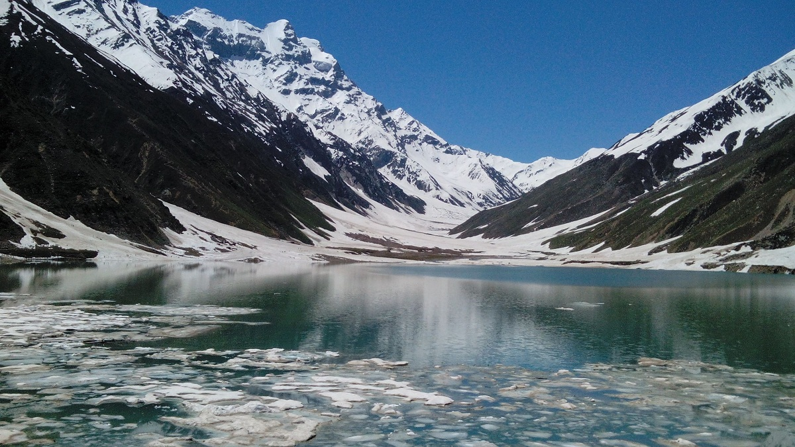

On the top of the list for the best places in northern areas of Pakistan, we have Naran Kaghan valley in the Himalayan Mountains of Khyber Pakhtunkhwa Pakistan. Naran valleys stay open for few months to delivers some of the marvelous views from nature. As the valley remains closed during winters from October till April due to heavy snowfall in northern areas of Pakistan. As the road leading towards the valley gets block due to avalanches coming from the mountains. However, Naran valley is one of the most famous traveling places in northern areas of Pakistan amongst the local travelers. Every year, a huge number of visitors travel to this site with their friends, families and loved ones to capture the best memories. The Valley surrounded by the lush green mountains and deep alpine forest giving a beautiful impact on travelers about Himalayan valleys. In the valley of Naran, there are a lot more to discover like the fairy tale Saif Ul Malook Lake, Hike towards the Ansoo Lake, Lulusar lake, The Queen Dudipatsar Lake and lastly Babusar Top (4,173 m). SO make a plan this summers 2019 and get on the journey to explore Naran valley among other best places in northern Pakistan.
Naran Kaghan

Click Here

Click Here